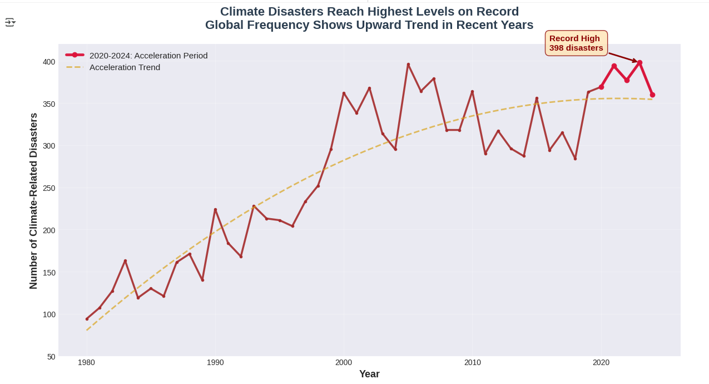
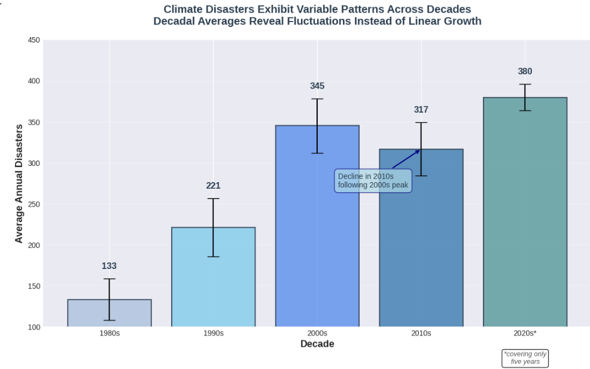

Name: Bokyoung Son
Email: boson@ucsd.edu

Climate disasters reach highest levels on record, with 2020-2024 showing accelerated frequency

Decadal averages reveal fluctuations including 2010s decline, questioning consistent acceleration
This project made me recognize that visualization choices are never entirely neutral; each one inherently carries rhetorical significance, whether intentional or not. The distinction between "persuasion" and "deception" is not absolute but rather exists along a continuum, with context playing a crucial role in determining the placement of specific techniques. The most challenging aspect I encountered was calibrating deception to the "detectable only upon close examination" level as specified in the rubric. Techniques such as axis truncation and deliberate timeframe selection are well-documented methods of manipulation; however, they remain highly effective because most readers do not critically examine axes or question temporal boundaries. This highlights a concerning asymmetry: ethical visualization demands both the intentionality of the creator and the vigilance of the viewer, yet casual readers often lack the time or expertise to critically evaluate every chart they encounter.
The process of producing contrasting visualizations illustrated how the same technique can serve opposing rhetorical purposes depending on its application. The most significant finding was that axis truncation was used to exaggerate differences in Visualization 1 (by commencing the Y-axis at 50) while concurrently being applied to minimize differences in Visualization 2 (by starting at 100). This inconsistency complicates direct comparison of my visualizations, as readers are unable to easily view them side-by-side or identify contradictions resulting from distorted relative magnitudes caused by varying axis scales. This insight suggests that ethical visualization isn't just about individual design choices but about consistency and transparency across a body of work. If both visualizations utilized identical axis conventions, readers could more readily compare them and recognize that both can't simultaneously be "true" representations of the same underlying data.
Upon completing this assignment, I define "ethical analysis and visualization" as a practice that prioritizes the reader’s comprehension and decision-making ability over rhetorical triumph. This means maintaining methodological consistency (especially when creating comparative visualizations), making data transformation choices transparent, and avoiding techniques whose primary function is to obscure rather than illuminate. Effective persuasive strategies encompass the consistent application of color and annotation across comparable visuals; the selection of aggregation methods that accurately reveal underlying patterns without selectively choosing time frames; and the use of framing language that provides contextual support without biasing interpretation. Misleading practices encompass axis manipulations that exaggerate or diminish effects without proper disclosure; selective inclusion or exclusion of relevant data points that contradict the intended narrative; and inconsistent application of techniques, such as error bars or trend lines, across comparative visualizations to create deceptive impressions of certainty or uncertainty.
However, completing this project leaves me uncertain about where exactly to draw ethical boundaries. Choosing 1980 as the starting point for Visualization 1, rather than 1970 or 1990, establishes different baselines and consequently results in varying slopes. Is any starting year genuinely neutral, or do all temporal boundaries inherently generate anchoring effects? Similarly, color psychology primarily operates below the level of conscious awareness, with red signaling "increase" and blue indicating "variability," thereby eliciting emotional responses prior to rational consideration. Is this an inherent form of manipulation, or merely effective communication that capitalizes on the mechanisms of human perception? These questions indicate that achieving perfect objectivity in visualization may be unattainable, and that transparency regarding methodology may be both more feasible and more intellectually honest than asserting neutrality. Arguably, the most ethical approach is not to eschew all persuasive techniques—which may be impracticable—but to be transparent about the decisions made, the alternatives evaluated, and the interpretative implications of those choices. This would empower readers to mentally adjust for known biases rather than claiming nonexistent objectivity.
What I found most creative about my approach was discovering that the same technique—axis truncation—could serve diametrically opposed rhetorical purposes depending on its application. Beginning the Y-axis at 50 in Visualization 1 (thereby exaggerating the slope) and at 100 in Visualization 2 (thereby compressing differences) produced visuals that convey contrasting yet initially persuasive narratives. This highlights how deception often lies not in individual techniques but in their inconsistent application across comparative work. Similarly, my use of error bars—statistically valid yet selectively applied—demonstrates how legitimate statistical tools can be manipulated through strategic inclusion or omission. These approaches reflect a sophisticated understanding that the most effective deception uses accurate data and established techniques but applies them strategically to guide interpretation.